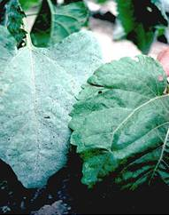

| Home |
| SUNFLOWER |
MAJOR DISEASES |
| 1. Root rot or charcoal rot |
| 2. Leaf blight |
| 3. Rust |
| 4. Head rot |
| 5. Powdery mildew |
| 6. Basal rot |
| 7. Necrosis |
| Questions |
| Download Notes |
SUNFLOWER :: MAJOR DISEASE :: POWDERY MILDEW
Powdery mildew - Erysiphe cichoracearum
Symptoms
The disease produces white powdery growth on the leavesWhite to grey mildew on the upper surface of older leaves. As plant matures black pin head sized are visible in white mildew areas. The affected leaves more luster, curl, become chlorotic and die.
|  |
Symptoms |
Favorable Conditions
- The disease is more under dry condition to the end of the winter months.
Management
- Complete field and crop sanitation.
- Early varieties should be preferred.
- Removal of infected plant debris.
- Application of karathane or calixin 1L/ha or wettable sulphur 2 kg/ha is found effective in reducing the disease incidences.